품질경영기사 (2016-03-06 기출문제)
1과목: 실험계획법
1. 모수인자 A, B와 변량인자 C에 대한 3원배치 실험에서 A(3수준), B(2수준), C(2수준) 인 경우 인자 B의 기대평균제곱 E(VB)는?
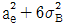
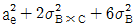
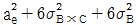
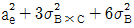
(정답률: 74%)

2. 인자 A는 4수준, 인자 B는 5수준의 2원배치 실험에서 다음과 같은 값을 얻었다. 인자 A의 분산비(F0)를 구하면 약 얼마인가?
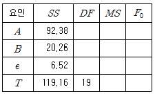
- 72.61
- 63.71
- 59.25
- 56.67
(정답률: 78%)
3. ??형 요인의 실험을 동일한 환경에서 실험하기 곤란하여 3개의 블럭으로 나누어 실험을 한 결과 다음과 같은 데이터를 얻었다. 인자 A의 제곱합(SA)은 얼마인가? (문제 오류로 복원중입니다. 정확한 내용을 아시는 분께서는 오류신고를 통하여 내용 작성 부탁 드립니다. 정답은 1번입니다.)
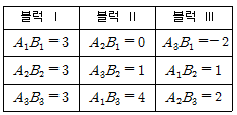
- 6
- 7
- 8
- 9
(정답률: 77%)
4. 실험을 통해 최적의 수준을 선정하는 것을 목적으로 채택되며, 보통 몇 개의 수준이 형성되는 인자를 무엇이라고 하는가?
- 오차인자
- 표시인자
- 블록인자
- 제어인자
(정답률: 54%)
5. LS(27)형 직교배열표에서 인자 A와 교락된 요인은?
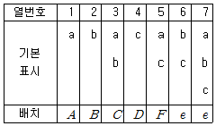
- AB, BDF, ACDF
- AC, CDF, ABDF
- AF, BCF, ABCD
- BC, DF, ABCDF
(정답률: 76%)
6. 3요인 A, B, C에 관한 23요인실험을 완전랜덤화법으로 3번 반복하였을 때 오차항의 자유도(ve)는?
- 8
- 14
- 16
- 23
(정답률: 65%)
7. 제품의 강도를 높이기 위하여 열처리 온도를 인자로 설정하여 300, 350, 400℃에서 실험을 실시하였다. 다음 설명 중 틀린 것은?
- 수준수는 3이다.
- 강도는 특성치이다.
- 열처리 온도는 변량인자이다.
- 수준은 기술적으로 미리 정해진 수준이다.
(정답률: 72%)
8. 1차단위 인자 A와 2차단위 인자 B를 모수인자로 하고 블록반복 R회의 단일분할 실험을 하여 분산분석을 한 결과이다. 다음 중 틀린 것은?
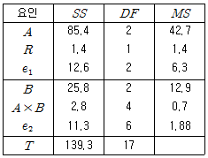
- FA = 6.78
- FB = 6.86
- Fe1 = 3.35
- FA×B = 0.27
(정답률: 81%)
9. 반복수가 같은 1원배치법에서 다음의 분산분석표를 얻었다. A1 수준에서의 데이터의 평균치가
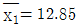
라면 A1 수준에서의 모평균 μ(A1) 의 95% 신뢰구간은 약 얼마인가? (단, t0.975(4) = 2.776, t0.975(15) = 2.131, t0.975(19) = 2.093 이다.)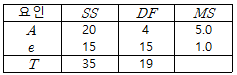
- 12.85±0.58
- 12.85±1.07
- 12.85±2.10
- 12.85±4.20
(정답률: 62%)
10. 3×3 라틴방격에서 오차항의 자유도(ve)는?
- 2
- 3
- 4
- 5
(정답률: 73%)
11. 23요인 배치법에서 abc, a, b, c의 4개의 처리 조합을 일부실시법에 의해 실험하려고 한다. B의 별명(Alias)은?
- AB
- BC
- AC
- ABC
(정답률: 76%)
12. 하나의 실험점에서 30, 40, 38, 49 dB의 반복 관측치를 얻었다. 자료가 망대 특성치일 때 SN비의 값은 약 얼마인가?
- 24.86
- 31.48
- 38.68
- 42.43
(정답률: 72%)
13. 동일한 제품을 생산하는 5대의 기계에서 적합 여부의 동일성에 관한 실험을 하였다. 적합품이면 0, 부적합품이면 1의 값을 주기로 하고, 5대의 기계에서 나오는 100개씩의 제품을 만들어 적합 여부를 실험하여 다음과 같은 결과를 얻었다. 총제곱합(ST)은 약 얼마인가?
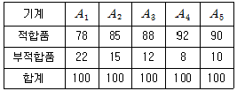
- 47.04
- 52.43
- 58.02
- 62.13
(정답률: 73%)
14. 수준수 l = 5, 반복수 m = 3인 1원배치법 단순회귀 분석에서 직선회귀의 자유도(ve)와 고차회귀의 자유도(ve)는 각각 얼마인가?
- vR = 1, vr = 3
- vR = 1, vr = 4
- vR = 2, vr = 3
- vR = 2, vr = 4
(정답률: 51%)
15. L9(34) 직교배열표를 이용하여 표와 같이 실험을 배치하였다. 다음 중 틀린 것은?
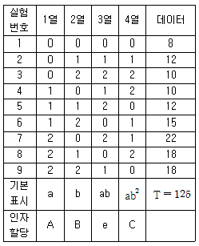
- 수정항(CT)은 약 1736.1 이다.
- 총실험수는 9개이며 총제곱합(ST)은 약 170.1 이다.
- 위의 할당으로 보아 교호작용은 별로 영향을 끼치지 않는다고 판단한 것이다.
- 실험번호 3의 실험조건은 A0B2C2 수준으로 조건을 설정하여 실험하였다는 뜻이다.
(정답률: 68%)
16. 지분실험법에 관한 설명으로 틀린 것은?
- 지분실험법의 오차항의 자유도는 (총데이터수) - (인자의 수준수의 합)에서 유도하여 만든다.
- 일반적으로 변량인자들에 대한 실험계획법으로 많이 사용되며 완전 랜덤 실험과는 거리가 멀다.
- 인자가 유의할 경우 모평균의 추정은 별로 의미가 없고, 산포의 정도를 추정하는 것이 효과적이다.
- 여러 가지 샘플링 및 측정의 정도를 추정하여 샘플링 방식을 설계할 때나 측정방법을 검토할 때도 사용이 가능하다.
(정답률: 71%)
17. 난괴법에 관한 설명으로 틀린 것은?
- 1인자는 모수이고 1인자는 변량인 반복이 없는 2원배치의 실험이다.
- 일반적으로 실험배치의 랜덤에 제약이 있는 경우에 몇 단계로 나누어 설계하는 방법이다.
- 실험설계시 실험환경을 균일하게 하여 블럭간에 차이가 없을 때 오차항에 풀링하면, 1원배치 실험과 동일하다.
- 일반적으로 1원배치로 단순반복 실험을 하는 것보다 반복을 블럭으로 나누어 2원배치하는 경우, 층별이 잘되면 정보량이 많아진다.
(정답률: 56%)
18. 반복수가 n으로 동일하고 a개의 수준을 갖는 일원배치법에서 처리의 제곱합(sum of square treatment)은 몇 개의 직교대비로 분해 가능한가?
- a개
- a-1개
- n개
- n-1개
(정답률: 55%)
19. 요인 A의 분산비가 F0가 20.6, 오차의 평균제곱(Ve)이 2.2, 요인 A의 수준수가 3일 때, 요인 A의 제곱합(SA)은?
- 90.64
- 135.96
- 175.32
- 215.11
(정답률: 62%)
20. 교호작용을 설명한 내용으로 틀린 것은?
- 주효과와 오차의 1차 결합을 말한다.
- 1원배치나 반복없는 2원배치에는 나타나지 않는다.
- 2인자 이상의 특정한 인자수준의 조합에서 일어나는 효과를 말한다.
- 반복있는 2원배치에서 교호작용의 자유도는 2인자의 자유도의 곱이다.
(정답률: 58%)
2과목: 통계적품질관리
21. 이항분포를 따르는 모집단에서 n=100, P=1/2 일 때, 표준편차의 기대치는 얼마인가?
- 5
- 10
- 15
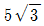
(정답률: 68%)
22. N=500, n=40, e=1인 계수규준형 1회 샘플링검사에서 모부적합품률 P=0.3%일 때 로트가 합격할 확률 L(p)은 약 얼마인가? (단, 푸아송 분포로 계산하시오.)(오류 신고가 접수된 문제입니다. 반드시 정답과 해설을 확인하시기 바랍니다.)
- 0.621
- 0.887
- 0.896
- 0.993
(정답률: 38%)
23. 대학생들이 학년별로 좋아하는 가수가 바뀌는가를 검정하고자 각 학년별로 랜덤으로 100명씩 선정하여 가수 4명 중에서 좋아하는 가수를 조사하여 표를 만들었다. 가장 적합한 검정방법은?
- 회귀 검정
- 동일성 검정
- 평균치 차의 검정
- 모분산 비 검정
(정답률: 70%)
24. 최근 대졸자의 정규직 취업이 사회적 문제로 대두되고 있다. 올해 정부의 대졸 정규직 취업률 목표치인 70%보다 실제 취업률이 낮은지를 검정하기 위하여 대졸자 500명을 조사해본 결과 300명이 정규직으로 취업한 것으로 나타나 목표치보다 낮은 것으로 검증되었다. 올해 취업률에 대한 95% 위쪽 신뢰한계는 약 얼마인가?
- 0.632
- 0.636
- 0.638
- 0.643
(정답률: 50%)
25. 로트별 합격품질한계(AQL) 지표형 샘플링검사 방식(KS Q ISO 2859-1:2014)의 보통검사에서 수월한 검사로 전환할 때 전환점수의 계산 방법이 틀린 것은?
- 합격판정개수 AC ≤ 1 인 1회 샘플링검사에서 로트 합격시 전환점수에 2점을 가산하고 그렇지 않으면 0점으로 복귀한다.
- 2회 샘플링검사에서 제1차 샘플에서 로트 합격시 전환점수에 2점을 가산하고 그렇지 않으면 0점으로 복귀한다.
- 다회 샘플링검사에서 제3차 샘플까지 합격시 전환점수에 3점을 가산하고 그렇지 않으면 0점으로 복귀한다.
- 합격판정개수 AC ≥ 2 인 1회 샘플링검사에서 AQL이 1단계 엄격한 조건에서 로트 합격시 전환점수에 3점을 가산하고 그렇지 않으면 0점으로 복귀한다.
(정답률: 39%)
26. 계수 및 계량 규준형 1회 샘플링검사(KS Q 0001:2013) 규격에서 로트의 표준편차를 알고 있는 경우, 계량 규준형 1회 샘플링 검사의 적용 조건으로 해당하지 않는 것은?
- 제품을 로트로 처리 할 수 있어야 한다.
- 검사단위의 품질을 계량치로 나타낼 수 있어야 한다.
- 부적합품률을 따르는 경우 특성값이 정규분포에 근사하고 있어야 한다.
- 부적합품률을 따르는 경우 부적합품률을 어느 한도 내로 보증하는 것이므로 합격 로트 안에 부적합품이 들어가면 안된다.
(정답률: 67%)
27. 3σ법의  관리도에서 제1종 오류를 범할 확률은?
관리도에서 제1종 오류를 범할 확률은?
- 0.00135
- 0.01
- 0.0027
- 0.⑤
(정답률: 59%)
28. 관리도의 OC곡선에 관한 설명으로 틀린 것은?
- 공정이 관리상태일 때 OC 곡선은 제1종 오류(α)를 나타낸다.
- 공정이 이상상태일 때 OC 곡선은 제2종 오류(β)를 나타낸다.
- OC 곡선은 관리도가 공정변화를 얼마나 잘 탐지하는가를 나타낸다.
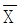
관리도의 경우 정규분포의 성질을 이용하여 OC 곡선을 활용할 수 있다.
(정답률: 40%)
29. 로트에 대한 평균치의 추정 정밀도(
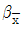
)를 구할 경우 영향을 미치지 않는 것은?- α값
- 표준편차
- 평균치
- 표본의 크기
(정답률: 45%)
30. 관리도에 대한 설명으로 맞는 것은?
- R관리도는 공정의 평균값의 변화를 보는데 사용된다.
- u관리도는 부분군의 크기(n)가 일정할 때만 사용할 수 있다.
- 관리도를 사용하여 좋은 품질의 로트와 나쁜 품질의 로트를 구별한다.
- p관리도는 부분군의 크기(n)가 일정하지 않아도 사용 할 수 있다.
(정답률: 47%)
31.
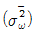
관리도에서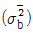
관리도의 관리상한(UCL)=13.0, 관리하한 (LCL)=7.0 일 때 부분군의 크기(n)는 얼마인가? (단,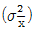
=3.⑤2, c4 =0.763 이다.)- 4
- 8
- 12
- 16
(정답률: 27%)
32. 병당 100정이 들은 약품 10000병이 있다. 이것에서 10병을 랜덤으로 고르고 각 병으로부터 5정씩 랜덤으로 샘플링하여 각 정마다 중량을 측정하였다. 그 결과 병내의 군내변동
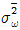
은 400(mg), 각 병간의 군간변동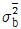
은 200(mg)이 되었다. 측정오차를 고려하지 않을 때, 이 데이터의 정밀도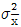
는 얼마인가?- 5.3(mg)
- 10.0(mg)
- 28.0(mg)
- 100.0(mg)
(정답률: 49%)
33.
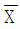
관리도에서 의 변동을
의 변동을 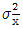
, 개개 데이터의 변동을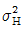
, 군간변동을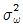
, 군내변동을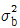
라 하면 완전한 관리상태일 때 이들 간의 관계식으로 맞는 것은?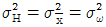
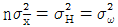
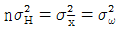
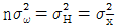
(정답률: 53%)
34. 어떤 제품의 품질특성에 대해 σ2 에 대한 95% 신뢰구간을 구하였더니 1.65 ≤ σ2 ≤ 6.20 이었다. 이 품질특성을 동일한 데이터를 활용하여 귀무가설(H0) σ2 = 8 , 대립가설(H1) σ2 ≠ 8 로 하여 유의수준 0.⑤로 검정하였다면, 귀무가설(H0)의 판정 결과는?
- 기각한다.
- 보류한다.
- 채택한다.
- 판정할 수 없다.
(정답률: 71%)
35. 표본평균(
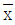
)의 표준오차를 원래 값의 1/8로 줄이기 위해서는 표본의 크기를 원래보다 몇 배 늘려야 하는가?- 8배
- 16배
- 64배
- 256배
(정답률: 64%)
36. σ1 = 2.0, σ2 = 3.0인 모집단에서 각각 n1 = 5개, n2 = 6개를 추출하여 어떤 특성치를 측정한 결과
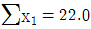
,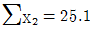
이였다. 두 모평균 차이 검정을 위한 검정통계량(u0)의 값은 약 얼마인가?- 0.143
- 0.341
- 2.982
- 3.535
(정답률: 49%)
37. 모집단을 여러 개의 층으로 나누고 그 중에서 일부를 랜덤 샘플링한 후, 샘플링 된 층에 속해 있는 모든 제품을 측정 조사하는 방법은?
- 집락 샘플링(cluster sampling)
- 층별 샘플링(stratified sampling)
- 계통 샘플링(systematic sampling)
- 2단계 샘플링(two stage sampling)
(정답률: 54%)
38. 계량치 축차샘플링 검사 방식(KS Q ISO 8423 : 2009)에 따라 제품의 특성을 검사하고자 한다. 규격하한이 200kV, 로트의 표준편차가 1.2kV, hA = 4.312, hR = 5.536, g = 2.315, n2 = 49이다. n = 12에서 합격판정치(A)의 값은 약 얼마인가?
- 26.693
- 29.471
- 38.510
- 41.293
(정답률: 43%)
39. 피스톤의 외경을 X1, 실린더의 내경을 X2라 한다. X1, X2가 서로 독립된 확률분포를 하고, 그 표준편차가 각각 0.0⑤, 0.003이라면 실린더와 피스톤 사이의 간격 X2-X1의 표준편차는?
- 0.⑤2 - 0.032
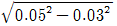
- 0.⑤2 + 0.032
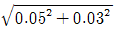
(정답률: 70%)
40. 두 변수 x, y에서 x는 독립변수, y는 그에 대한 종속변수이고 대응을 이루고 있는 표본이 n개 일 때, 이들 사이의 상관가계를 분석하는 수식으로 틀린 것은? (단, 확률변수 X의 제곱합(Sxz), 확률변수 Y의 제곱합(Syy), 공분산(Vwy), X의 분산(Vz), Y의 분산(Vy), n은 표본의 수이다.)
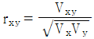
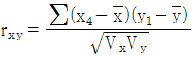
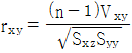
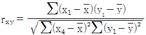
(정답률: 40%)
3과목: 생산시스템
41. 추적지표(TS) 산정을 위한 표에서 빈칸에 해당하는 통계량은?
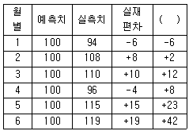
- 누적예측오차(CFE)
- 평균제곱오차(MSE)
- 절대평균편차(MAD)
- 절대평균백분율오차(MAPE)
(정답률: 74%)
42. 워크샘플링법을 이용하여 기계가동 실태를 조사한 결과 정지율이 29%로 추정 되었다. 정지율 추정에 사용된 관측치가 모두 1000개 였다면 신뢰수준 95% 수준에서 상대오차는 약 몇 % 인가?
- ± 8.1%
- ± 14.8%
- ± 9.9%
- ± 19.8%
(정답률: 37%)
43. 포드(Ford) 생산 시스템의 내용이 아닌 것은?
- 동시관리
- 이동조립법
- 기능식 조직
- 저가격 고임금 추구
(정답률: 57%)
44. GT(Group technology)에 관한 설명으로 가장 거리가 먼 것은?
- 배치시에는 혼합형 배치를 주로 사용한다.
- 생산설비를 기계군이나 셀로 분류, 정돈한다.
- 설계상, 제조상 유사성으로 구분하여 부품군으로 집단화한다.
- 소품종 대량생산시스템에서 생산능률을 향상시키기 위한 방법이다.
(정답률: 68%)
45. 제품 A의 구조도가 그림과 같을 때 주생산계획(MPS)이 100개인 경우 자재 E의 총소요량은? (단, 그림에서 괄호의 숫자는 상위품목 1단위 생산에 필요한 하위품목 수량이다.)
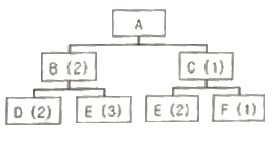
- 500 개
- 600 개
- 800 개
- 1200 개
(정답률: 57%)
46. PTS 기법 중 워크팩터법의 시간측정 단위는?
- PSI
- TMU
- MOD
- WFU
(정답률: 61%)
47. JIT 시스템에서 간판의 기능과 사용수칙에 대한 설명이 아닌 것은?
- 간판은 작업지시 기능을 가지고 있다.
- 간판은 Push 시스템을 활용한 경영개선 도구이다.
- 간판의 사용수칙으로 부적합품을 후속공정에 보내지 않는다.
- 간판의 사용수칙으로 후속공정에서 필요한 부품을 전공정에서 가져온다.
(정답률: 76%)
48. 그림과 같은 PERT 네트워크에서 주공정의 값은 얼마인가?
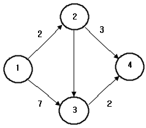
- 5일
- 8일
- 9일
- 14일
(정답률: 65%)
49. 제품의 시장수요을 예측하여 불특정 다수 고객을 대상으로 대량생산하는 방식은?
- 계획생산
- 주문생산
- 동시생산
- 프로젝트생산
(정답률: 66%)
50. 다음 자료와 SPT(Shortest Processing Time) 규칙을 이용하여 3가지 제품을 생산하는 단일기계 M의 처리 순서를 결정했을 때 평균지체시간(Average Job Tardiness)은?
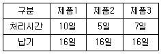
- 1일
- 2일
- 3일
- 4일
(정답률: 52%)
51. 작업분석에 이용되는 도표가 아닌 것은?
- 흐름공정도표(Flow Process Chart)
- 복수작업자분석도표(Gang Process Chart)
- 다중활동분석도표 (Multiple Activity Chart)
- 작업자-기계 작업분석도표 (Man-Machine Chart)
(정답률: 56%)
52. 예지보전에 대한 설명으로 틀린 것은?(오류 신고가 접수된 문제입니다. 반드시 정답과 해설을 확인하시기 바랍니다.)
- 과다한 보전비용의 발생을 방지할 수 있다.
- 일정한 주기에 의해 부품을 교체하는 방식이다.
- 불필요한 예방보전을 줄이면서 트러블에 대한 미연에 방지를 도모한다.
- 부품이 정상적으로 작동하면 교체하지 않고 지속적으로 사용하며 상태를 체크한다.
(정답률: 52%)
53. 손익분기점을 산출하여 제품조합을 결정하는 방법 중 품종별 한계이익률을 사용하여 한계이익액을 산출하고 이를 고정비와 대비하여 손익분기점을 구하는 방법은?
- 개별법
- 평균법
- 기준법
- 절충법
(정답률: 52%)
54. 기업의 목적을 효율적으로 달성하기 위하여 자신의 능력으로 핵심부분에 집중하고 조직 내부활동 또는 기능의 일부를 외부의 조직 또는 외부 기업체에 전문용역을 활용하여 처리하는 경영기법을 의미하는 용어는?
- Loading
- Debugging
- Cross docking
- Outsourcing
(정답률: 75%)
55. TPM(Total Productive Maintenance)의 5가지 기둥(기본활동)으로 틀린 것은?
- 5S 활동
- 계획보전활동
- 설비초기 관리활동
- 설비효율화 개별개선활동
(정답률: 53%)
56. 정상시간(정미시간 : Normal Time)에 대한 설명으로 틀린 것은?
- 정상적인 작업수행에 필요한 시간
- 주어진 작업시간을 목표생산량으로 나눈 시간
- PTS(Predetermined Time Standard)법에 의하여 산출된 시간
- 스톱워치에 의하여 구한 관측평균시간에 작업수행도평가(Performance Rating)를 반영한 시간
(정답률: 42%)
57. 장기계획에 의해 생산능력이 고정된 경우, 중기적인 수요의 변동에 대응하기 위해 고용수준, 생산수준, 재고수준 등을 결정하는 계획은?
- 공수계획
- 자재소요계획
- 공정계획
- 총괄생산계획
(정답률: 67%)
58. 최종 설계안에 의해 산출된 제품 또는 반제품 1단위당 자재별 소요량을 정의한 것은?
- 수율
- 생산성
- 로트(Lot)
- 원단위
(정답률: 58%)
59. 연간 수요량이 240000개, 1회당 발주비용이 10000원, 1회 발주량이 20000개인 경우 연간 발주비용은?
- 12000원
- 48000원
- 120000원
- 480000원
(정답률: 57%)
60. 도요타생산방식(TPS)에서 제거하고자 하는 7대 낭비가 아닌 것은?
- 기능의 낭비
- 재고의 낭비
- 운반의 낭비
- 과잉생산의 낭비
(정답률: 64%)
4과목: 신뢰성관리
61. 고장률 h1(t)가 일정한 n개의 부품으로 구성된 직렬시스템에 대한 고장률로 맞는 것은?
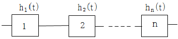
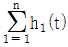
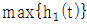
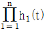
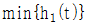
(정답률: 57%)
62. 재료에 가해지는 부하(stress)는 평균(μz)이 1, 표준편차(σz)가 0.5 인 정규분포를 따르고, 재료의 강도는 평균이 μy 표준편차(σy)는 0.5인 정규분포를 따른다. μx 와 μy 로부터의 거리가 각각 nx = ny = 2 이고 안전계수(m)를 2로 하고 싶은 경우, 재료의 평균 강도(μy)는 얼마인가?
- 1.5
- 2.8
- 4.4
- 5.0
(정답률: 50%)
63. 설계단계에서 신뢰성을 높이기 위한 신뢰성 설계방법이 아닌 것은?
- 리던던시 설계
- 디레이팅 설계
- 사용부품의 표준화
- 예방보전과 사후보전 체계확법
(정답률: 53%)
64. 와이블확률지에서 가로축과 세로축이 표시하는 것으로 맞는 것은?
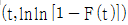
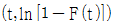
(정답률: 52%)
65. 수명분포가 지수분포를 따르는 경우에 관한 설명 중 틀린 것은?
- 단위시간당의 고장건수는 이항 분포를 따른다.
- 고장률은 평균수명에 대해 역의 관계가 성립한다.
- 시스템의 사용시간이 경과한 뒤에도 측정하는 관심 모수의 값은 변하지 않는다.
- 시간을 사용한 뒤에도 작동되고 있다면 고장률은 처음과 같이 일정하다.
(정답률: 39%)
66. 초기고장 기간에 발생하는 고장의 원인이 아닌 것은?
- 설계 결함
- 불충분한 보전
- 조립상의 결함
- 불충분한 번인(Burn-in)
(정답률: 60%)
67. 수리율이 μ = 2.0 건/시간으로 일정할 때, 3시간 내에 보전을 완료할 확률[M(t)]은?
- M(t) = e2a×3
- M(t) = 1+e-2a×3
- M(t) = e-2a×3
- M(t) = 1-e-2a×3
(정답률: 60%)
68. 고장해석기법에 관한 사항으로 틀린 것은?
- 신뢰성과 안전성은 서로 밀접한 관계를 가지고 있다.
- 고장이나 안전성의 원인분석은 상황과 무관하게 결정한다.
- 고장이나 안전성의 예측 방법으로 FMEA, FTA 등이 많이 사용된다.
- 고장해석에 따라 제품의 고장을 감소시킴과 동시에 고장으로 인한 사용자의 피해를 감소시키는 것이 안전성 제고이다.
(정답률: 67%)
69. 설비의 가용도(Availability)에 대한 설명으로 틀린 것은?
- 수리율이 높아지면 가용도는 낮아진다.
- 신뢰도와 보전도를 결합한 평가척도이다.
- 어느 특정순간에 기능을 유지하고 있을 확률이다.
- 가용도=동작가능시간/(동작가능시간+동작불가능시간)이다.
(정답률: 49%)
70. 와이블분포에서 사용시간(t)이 1000이고, 척도모수(η)가 1000, 위치모수(γ)가 0일 때, 신뢰도에 대한 설명으로 맞는 것은?
- 형상모수(m) 값에 무관하게 신뢰도는 일정하다.
- 형상모수(m) 값에 무관하게 신뢰도는 감소한다.
- 형상모수(m) 값에 증감함에 따라 신뢰도는 증가한다.
- 형상모수(m) 값에 감소함에 따라 신뢰도는 증가한다.
(정답률: 51%)
71. 각 부품의 신뢰도가 R로 일정한 2 out of 4 시스템의 신뢰도는?
- 2R - R2
- 2R2(1 + R + 2R2)
- 6R2 - 8R3 + 3R4
- 6R2(1 - 2R +R2)
(정답률: 52%)
72. n개의 고장 데이터가 주어졌고 i번째 고장발생 시간을 t1라고 할 때 중앙순위법(median rank)의 F(t1)는?
(정답률: 64%)
73. 60개의 동일한 아이템에 대해 10개가 고장이 날 때까지 시험을 하고 중단하였다. 시험 결과 10개의 고장시간은 시간단위로 다음과 같다. 이 아이템의 수명이 지수분포를 따르는 것으로 가정하고, 600시간 시점에서의 신뢰도를 구하면 약 얼마인가?
- 0.8908
- 0.8918
- 0.8928
- 0.8938
(정답률: 41%)
74. FT 도에서 시스템의 고장확률은? (단, 주어진 수치는 각 구성품의 고장확률이며, 각 구성품의 고장은 서로 독립이다.)
- 0.004
- 0.0⑤
- 0.006
- 0.007
(정답률: 66%)
75. 신뢰성 샘플링 검사의 특징에 관한 설명으로 틀린 것은?
- 위험률 α와 β의 값을 작게 취한다.
- 정시중단방식과 정수중단방식을 채용하고 있다.
- 품질의 척도로 MTBF, 고장률 등을 사용한다.
- 지수분포와 와이블 분포를 가정한 방식이 주류를 이루고 있다.
(정답률: 63%)
76. 300개의 소자로 구성된 전자제품에 대하여 수명시험을 한 결과 2시에서 4시 사이의 고장개수가 23개였다. 이 구간에서 고장확률밀도함수[f(t)]의 값은 약 얼마인가?
- 0.0333/시간
- 0.0367/시간
- 0.0383/시간
- 0.0457/시간
(정답률: 47%)
77. a승 법칙에 따르면 콘덴서에 대하여 정상전압 220V를 가속전압 260V에서 가속수명시험을 하였다. 이 콘덴서는 a=5인 a승 법칙에 따른다. 가속계수는 약 얼마인가?
- 1.182
- 2.31
- 8
- 40
(정답률: 44%)
78. n개의 샘플이 모두 고장날 때 까지 기다리지 않고, 미리 계획된 시점 t0에서 시험을 중단하는 시험은?
- 정수중단시험
- 임의중단시험
- 정시중단시험
- 가속수명시험
(정답률: 63%)
79. 각 부품 신뢰도는 0.9로 일정하고, 이러한 부품 6개로 구성된 병렬시스템의 신뢰도는?
- (0.9)6
- 1 - (0.9)6
- 1 - (1 - 0.9)6
- (1 - 0.9)6
(정답률: 66%)
80. 제품의 제조단계에서 고유신뢰도를 증대시키기 위한 방법이 아닌 것은?
- 제조기술의 향상
- 디레이팅(derating)
- 제조품질의 통계적 관리
- 스크리닝 또는 번인(burn-in)
(정답률: 38%)
5과목: 품질경영
81. 품질보증의 사후대책과 가장 관계가 깊은 것은?
- 품질심사
- 시장조사
- 기술연구
- 고객에 대한 PR
(정답률: 36%)
82. 종합적 품질경영(TQM)의 모델로 제시되는 말콤볼드리지(Malcom Baldridge National Quality Award) 평가기준 7개 범주에 해당되지 않는 것은?
- 리더십
- 운영초점
- 제조프로세스초점
- 측정, 분석 및 지식경영
(정답률: 44%)
83. 제안제도의 설명 중 맞는 것은?
- 관련되는 조직원이 팀을 이루어 업무에 관한 문제점을 주제로 선정하여 품질관리수법 등을 활용하여 문제를 해결해 가는 활동이다.
- 자신이 근무하는 환경에서 경험과 지식을 통해 문제를 직시하여 개선안을 제시하거나 개선을 실시한 후 사례를 레포트로 하여 제출하는 제도이다.
- 동아리의 자주학습을 권장하기 위해 업무의 현안 또는 기초지식에 대해 하나의 자료로 정보화 하여 해당 동료들과 함께 자율학습을 실시하는 제도이다.
- 회사의 경영목표를 달성하기 위해 주요한 품질지표 달성에 핵심적 요인을 주제로 하여 관련 부문의 조직원이 팀을 이루어 문제를 해결해 가는 팀활동이다.
(정답률: 59%)
84. 파라슈라만(Parasuraman) 등은 4가지 형태의 서비스를 제공받고 있는 고객들을 상대로 연구를 행한 결과 고객들이 제공받는 서비스형태가 제각기 다름에도 불구하고 서비스 품질수준을 인식할 때 평가하게 되는 기준 10가지를 밝히고 “서비스 품질의 결정요소”로 활용하였다. 이에 대한 설명으로 틀린 것은?
- 유형성(Tangibles) : 서비스의 유형적 단서
- 신뢰성(Reliability) : 약속된 서비스를 정확하게 이행하는 능력
- 대응성(Responsiveness) : 고객에게 서비스를 신속하게 제공하려는 의지
- 접근성(Access) : 서비스를 수행하는데 필요한 구성원들의 지식과 기술의 소유
(정답률: 50%)
85. 6 시그마에 대한 교육을 받고, 현 조직에서 업무를 수행하면서 부분적으로 개선활동에 참여하는 요원은?
- 챔피언(Champion)
- 블랙벨트(Black Belt)
- 그린벨트(Green Belt)
- 화이트벨트(White Belt)
(정답률: 62%)
86. 품질경영시스템 - 요구사항(KS Q ISO 9001:2015)에서 문서화된 정보의 관리를 위하여 적용되는 사항으로 다루어야 할 내용이 아닌 것은?
- 보유 및 폐기
- 변경관리(예 : 버전 관리)
- 배포, 접근, 검색 및 사용
- 가독성 보존을 제외한 보관 및 보존
(정답률: 48%)
87. 고객만족의 가치는 고객을 만족시키지 못했을 때 이탈하는 고객의 가치를 추정함으로써 평가할 수 있다. 다음 자료에서 고객을 만족시키지 못함으로써 발생되는 연간 손실액은?
- 1000만원
- 2000만원
- 3000만원
- 6000만원
(정답률: 55%)
88. 표준의 서식과 작성방법(KS A 0001:2015)에서 본문, 그림, 표 등의 내용을 이해하기 위하여 없어서는 안 될 것이지만, 그 안에 직접 기재하면 복잡해지는 사항을 따로 기재하는 것을 나타내는 용어는?
- 비고
- 각주
- 보기
- 참고
(정답률: 46%)
89. 한국산업표준(KS)의 부문 분류기호가 틀리게 연결된 것은?
- J - 생물
- G - 일용품
- R - 물류
- S - 서비스
(정답률: 55%)
90. 표준화의 적용구조에서 표준화가 주제로 하고 있는 속성을 구분하는 분야를 의미하는 것은?
- 국면
- 수준
- 기능
- 영역
(정답률: 38%)
91. 품질경영시스템은 PDCA 사이클로 설명될 수 있다. PDCA 사이클에 관한 내용으로 틀린 것은?
- Plan : 목표달성에 필요한 계획, 또는 표준의 설정
- Do : 계획된 것의 실행
- Check : 실시결과를 측정하여 해석하고 평가
- Action : 리스크와 기회를 식별하고 다루기 위하여 필요한 자원의 수립
(정답률: 61%)
92. 엄격책임은 비합리적으로 위험한 제품의 사용으로 인해 어느 누구든 상해를 입게 되면 그 제품의 제조자는 책임을 진다는 것이다. 이 때 제품자체에 초점을 맞추며, 제조자의 엄격책임을 증명하기 위해서 피해자가 입증해야 할 사항은?
- 제품이 보증된 대로 작동하지 않고 사용 중 상해를 일으킨다.
- 제조사는 제품의 제조에 있어서 합리적 주의 업무를 실행하지 않았다.
- 제품의 생산, 검사 그리고 안전 가이드라인에 대한 사내표준을 무시하였다.
- 제품에 신뢰할 수 없는 결함이 있었고, 그 결함이 원인이 되어 피해가 발생했다.
(정답률: 47%)
93. 모기업은 협력업체와의 품질에 관한 계약을 맺을 때, 협력업체가 양산 중 설비를 새로운 설비로 교체하였을 경우 반드시 모기업에 신고하여 승인을 받은 후 실시하게 유도하고 있다. 이러한 관리를 무엇이라 하는가?
- 공정능력관리
- 제조변경점 관리
- 설계변경점 관리
- 작업변경점 관리
(정답률: 41%)
94. 제품의 인증 구분에서 제품의 일반목적과는 유사한, 어떤 특정 용도에 따라 식별할 필요가 있을 경우에 분류하는 용어는?
- 형식(type)
- 등급(grade)
- 종류(class)
- 패턴(pattern)
(정답률: 61%)
95. 한국산업표준(KS) 서비스분야에서 ‘서비스 심사기준’에 해당되지 않는 것은?
- 서비스 품질경영 관리
- 고객이 제공받은 서비스
- 고객이 제공받은 사전 서비스
- 고객이 제공받은 사후 서비스
(정답률: 52%)
96. 규정 공차가 똑같은 16개의 부품을 조립할 때 조립품의 규정 공차가 10/300이 된다면 개개부품의 규정 공파는?
- 1/60
- 1/120
- 1/600
- 1/1200
(정답률: 47%)
97. 동일한 측정자가 동일한 측정기를 이용하여 동일한 제품을 여러 번 측정하였을 때 파생되는 측정변동을 의미하는 것은?
- 안정성(stability)
- 정확성(accuracy)
- 반복성(repeatability)
- 재현성(reproducibility)
(정답률: 53%)
98. 부적합품, 부적합, 고장 등의 발생건수를 분류 항목별로 나누어 크기의 순서대로 나열하고, 어떤 것이 주요 개선분야인가를 파악하고자 할 때 사용되는 기법은?
- 관리도
- 파레토그림
- 히스토그램
- 특성요인도
(정답률: 57%)
99. 품질코스트에 대한 분류방식으로 틀린 것은?
- 클레임대책비와 벌과금은 외부실패비용이다.
- 계량기 검교정비용과 현지서비스비용은 평가비용이다.
- 협력업체지도비용과 소집단활동 포상금은 예방비용이다.
- 협력업체 부적합 손실과 공정부적합 손실비용은 내부실패비용이다.
(정답률: 45%)
100. 품질전략을 수립 할 때 계획단계(전략의 형성단계)에서 SWOT 분석을 많이 활용하고 있다. 여기서 ‘W' 는 무엇인가?
- 약점
- 위협
- 강점
- 성장기회
(정답률: 66%)
이유는 3원배치 실험에서 인자 B의 기대평균제곱은 다음과 같이 계산된다.
E(VB) = (n/ab) * Σi=1a Σj=1b (μij• - μ•••)2
여기서 n은 총 실험 수, a는 인자 A의 수준 수, b는 인자 B의 수준 수, μij•는 인자 A의 i번째 수준, 인자 B의 j번째 수준, 모든 C 수준에서의 평균, μ•••는 전체 평균이다.
따라서 인자 B의 기대평균제곱은 인자 A와 C에 대한 정보가 없으므로, 인자 B의 수준 수(b)와 전체 실험 수(n)에만 의존한다. 따라서 E(VB)는 이 된다.